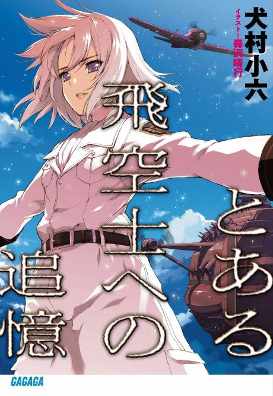

Anime
Anime
Light novelThe Princess and the Pilot
とある飛空士への追憶
The anime takes the story to Film.
7.3AniList
—Animeter
1 epMovie
Anime finished. Where does the story go next?
StatusNo source yet
We looked for where the anime ends in the light novel but found no source we trust yet. The light novel is 13 chapters, finished.